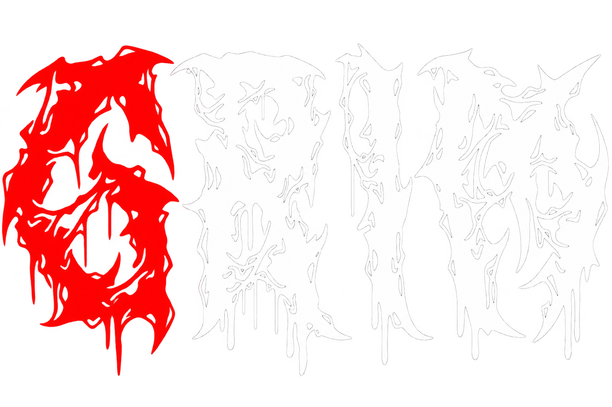
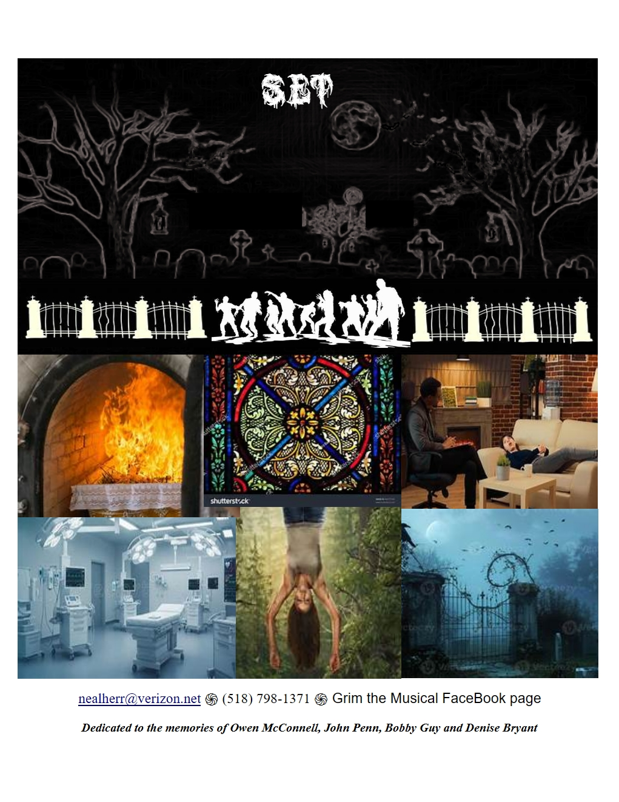
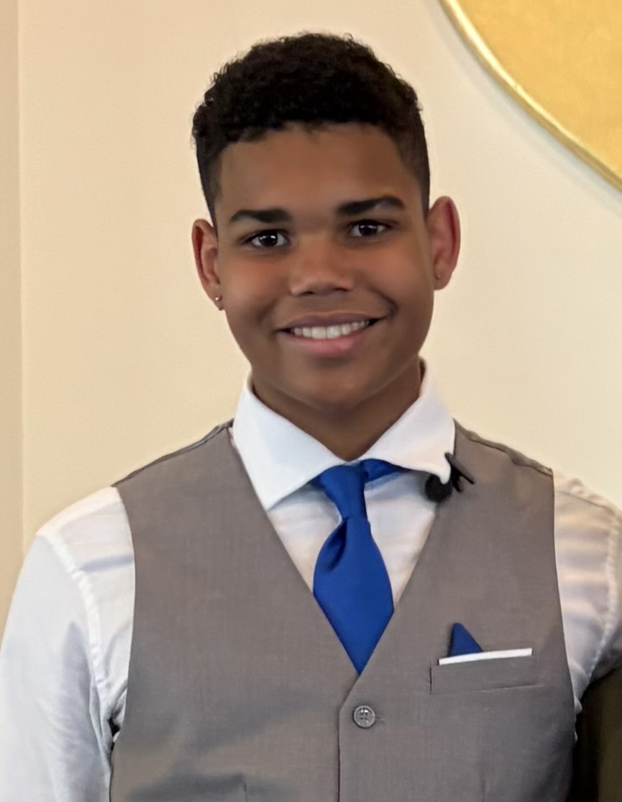
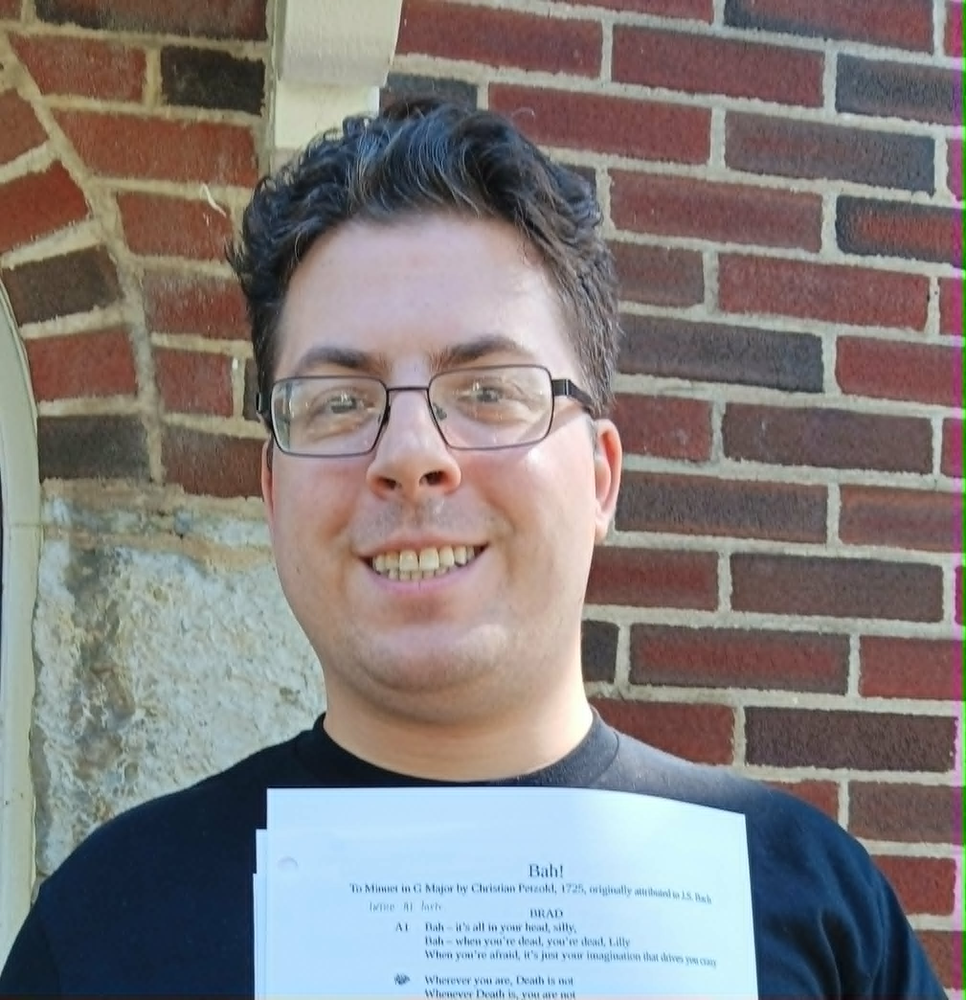
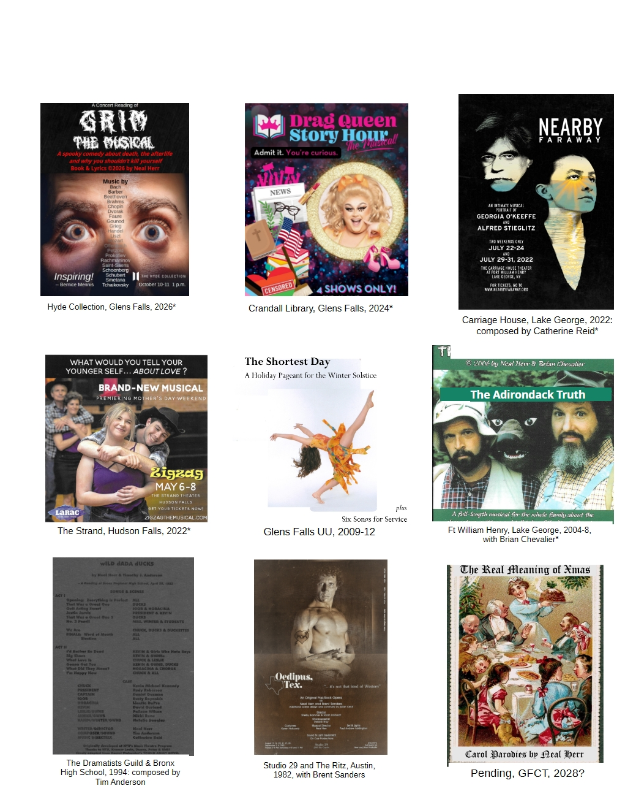
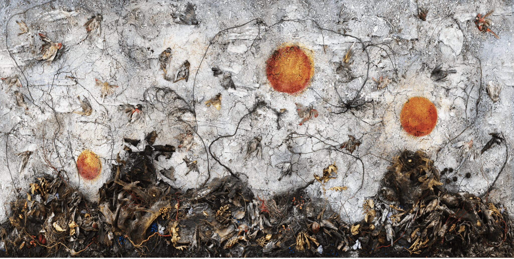
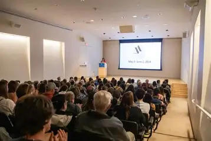
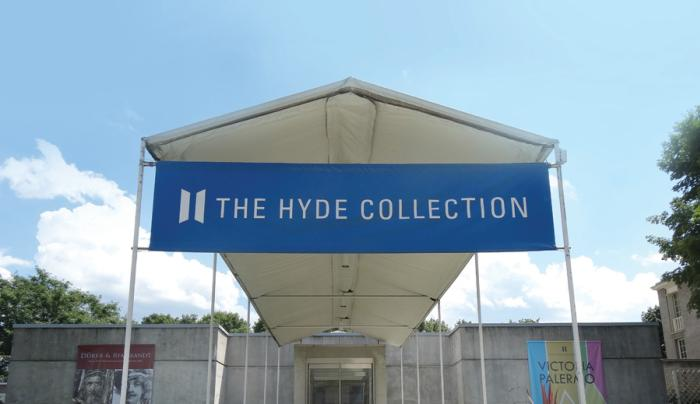

01
We Ghouls
Opening number · based on Gounod’s Funeral March of a Marionette
A concert reading · October 10 & 11 · 2 p.m.

The Musical
A spooky romp through death and the afterlife, powered by the world’s greatest classical composers.
Life. Death. Teenagers. What could go wrong?
GRIM is a spooky comedy-drama through death and the afterlife, featuring dramatically moody music by Bach, Beethoven, Brahms and more.
In the afterlife, teen Owen meets The Ghouls — mischievous adolescent zombies in a centuries-old “Children-Only” cemetery. Their primary irritainment is scaring visiting mortals, some of whom can’t see them, and “Imaginatives,” like Lillian, who can.
Afraid of everything, Lillian seeks treatment from Dr. Dink, inventor of the Scare Chair, but to no avail. Meanwhile Grim, the one-eyed, curmudgeonly gravedigger and go-between of the living and dead, mentors Owen as he is initiated into this strange underworld.
Owen’s second thoughts begin once he witnesses the pain he has inflicted on his parents — who themselves are pushed toward a change of heart through Ghoulish intervention.
Is it Heaven? Hell? You decide.
Content note: The story addresses death, suicide, grief, family conflict, conversion therapy, violent imagery and other mature themes. Rated PG.

Listen
Two excerpts from the score, pairing original theatrical writing with classical music.
Opening number · based on Gounod’s Funeral March of a Marionette
Based on J. S. Bach’s Little Fugue in G Minor
Cast & characters

Owen
Father
Mom
Dr. Dink
Lillian
Sara the Goth
Skully Johnson · Ghoul

Brad
Gruff, rough, tough gravedigger and go-between twixt the living and the dead; a one-eyed curmudgeon who’s seen it all — except parenthood.
Recently deceased teen, new to the underworld, curious and wanting to fit in with the Ghouls while missing his life above-ground.
An imaginative, phobic teen who can see the dead kids pranking the living.
Lillian’s twin brother, who pushes her toward therapy while carrying a secret of his own.
Psychiatrist, inventor of the Scare Chair and author of Fear is a Choice.
A cool Ghoul who hates everyone — but still big-sisters Newt.
The youngest Ghoul, forever young, kind and vulnerable.
Leader of the Ghouls, braggart, and self-appointed decider of each night’s agenda.
Local tough and Dirk’s right hand — although his muscle is mostly bluff.
The “oldest,” remembered forever from his tombstone for doing a dumb thing.
The first to go “poof” when forgotten; also doubles as Hospital Doctor and Preacher.
The first to go “poof” when forgotten; also doubles as Hospital Doctor and Preacher.
The first to go “poof” when forgotten; also doubles as Hospital Doctor and Preacher.
Owen’s grieving parents, carrying guilt, conflict, love and a difficult history.
The score
GRIM uses an all-classical score — famous works transformed into the dramatic engine of a new musical.
Other source works include Brahms’s Waltz in A-flat Major, Beethoven’s Moonlight Sonata and Für Elise, Debussy’s Arabesque No. 1, Smetana’s The Moldau, Liszt’s Hungarian Rhapsody No. 2 and Totentanz, Grieg’s Piano Concerto in A minor, Schubert’s Serenade, Handel’s Passacaglia, Fauré’s Pavane and more.
Creators
Writer · Director · Producer
Creator of GRIM and a body of original musicals spanning comedy, history and musical storytelling.
Musical Director
Accompanist

The Hyde Collection · Glens Falls, New York
A concert reading is a full-cast, music-stand performance of script and score without staging. GRIM will be presented in The Hyde Collection auditorium in conjunction with Tanya Marcuse’s exhibition Book of Miracles.



Questions?